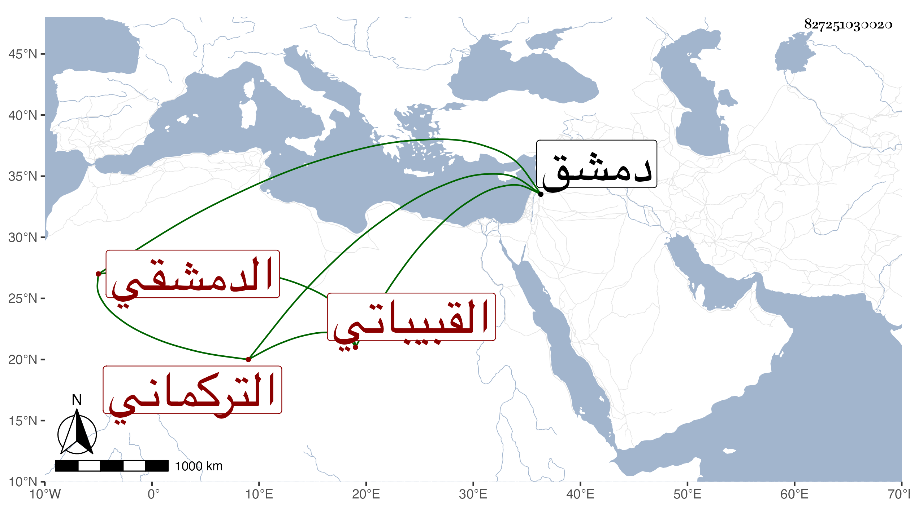

0902Sakhawi.DawLamic.ITO20230111-ara1.EIS1600.827251030020
Biography ID: 827251030020
273
محمد بن عبد الله التركماني القبيباتي الدمشقي ويعرف بالقواس . شيخ صالح زاهد عابد له زاوية غربي المصلى ظاهر دمشق مقيم بها وله أصحاب ومريدون وحلقة ذكر بالجامع الأموي عظيمة مقصود بالزيارة ، وكان ممن صاحب أبا بكر الموصلي دهرا وغيره من الأكابر . قال التقي بن قاضي شهبة : وكان يجيد تعبير الرؤيا عن صلاح لا علم . مات بزاويته عن أزيد من مائة فيما قيل ليلة الجمعة سادس ذي القعدة سنة ست وأربعين ولم يظهر عليه الهرم رحمه الله .
